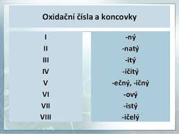

💡 Vysvětlení:
Prvky se spolu kamarádí a drží se "za ruce". Kolik rukou prvek nabízí, to nám říká
oxidační číslo (ty římské číslice jako I, II, IV).
- Když má prvek koncovku -ičitý, má 4 volné ruce.
- Kyslík v oxidech má vždy -2 ruce (potřebuje dvě ruce někoho jiného, aby byl spokojený).
- Ve vzorci to musí vždy vyjít nastejno – kolik rukou nabízí jeden, tolik jich musí ten druhý chytit. Součet musí být nula!
